MY BEST RACES
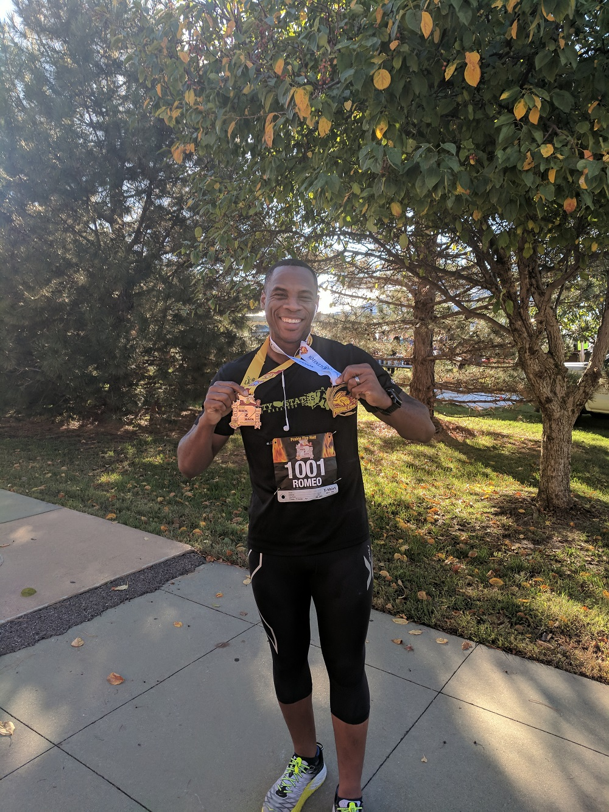
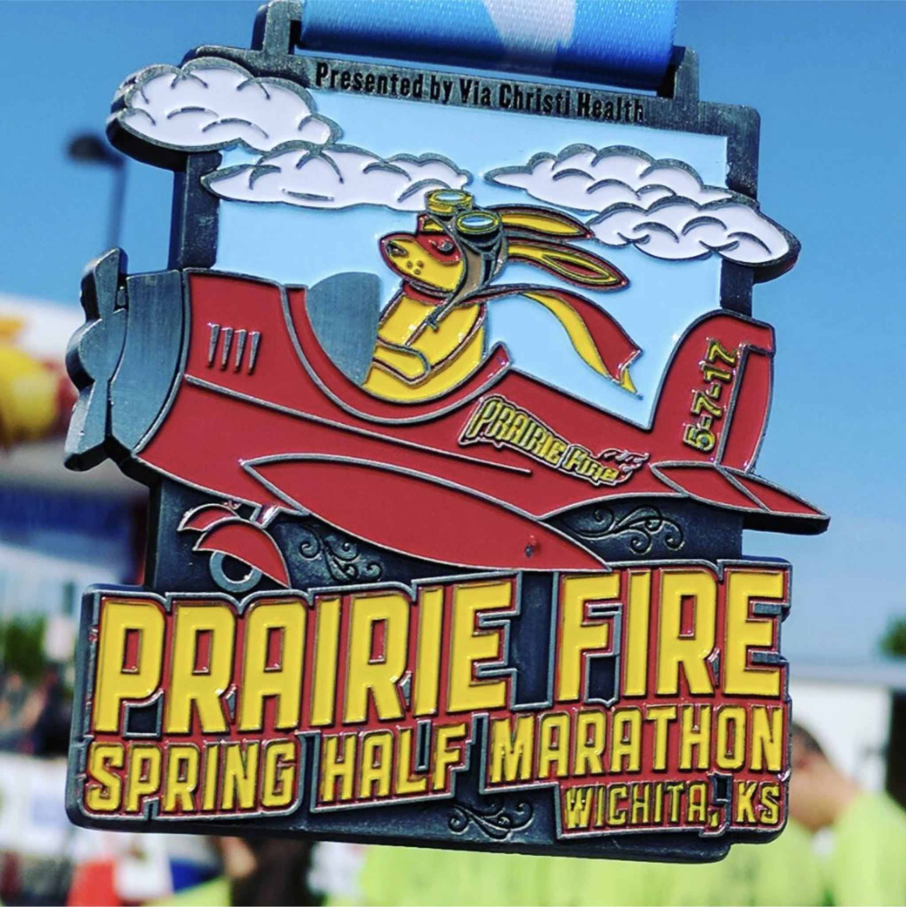
Fastest 1/2 Marathon
Prairie Fire Marathon 2016
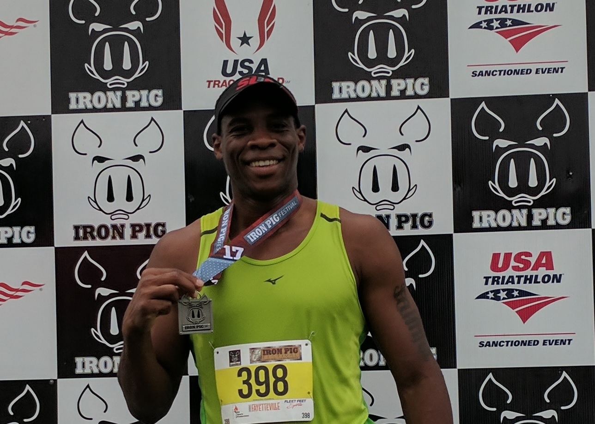
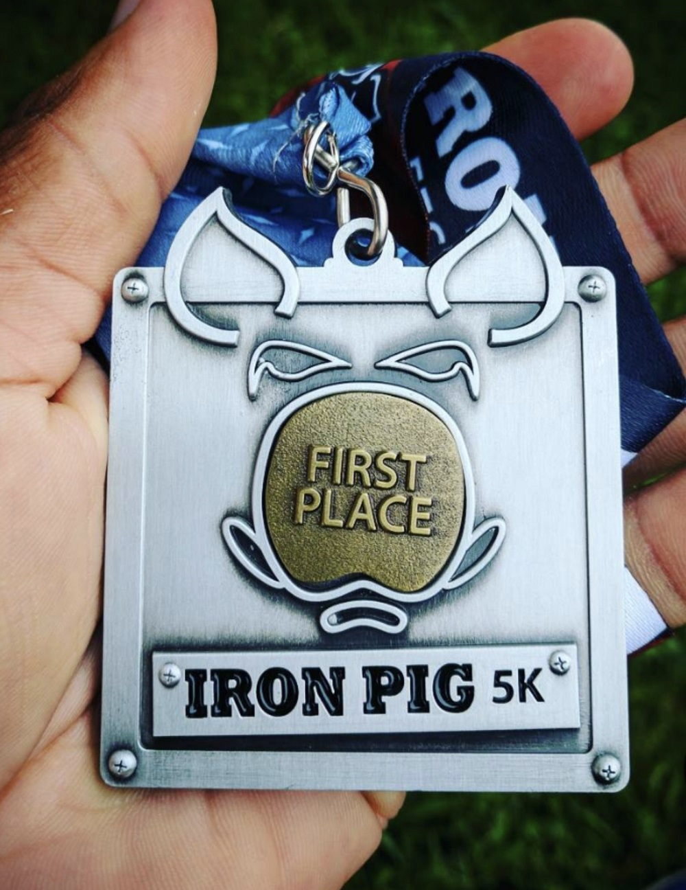
Fastest 5K
Iron Pig 5K

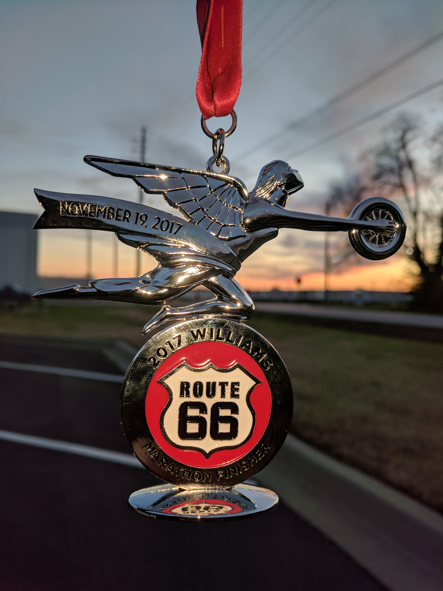
Fastest Marathon
Route 66 Marathon
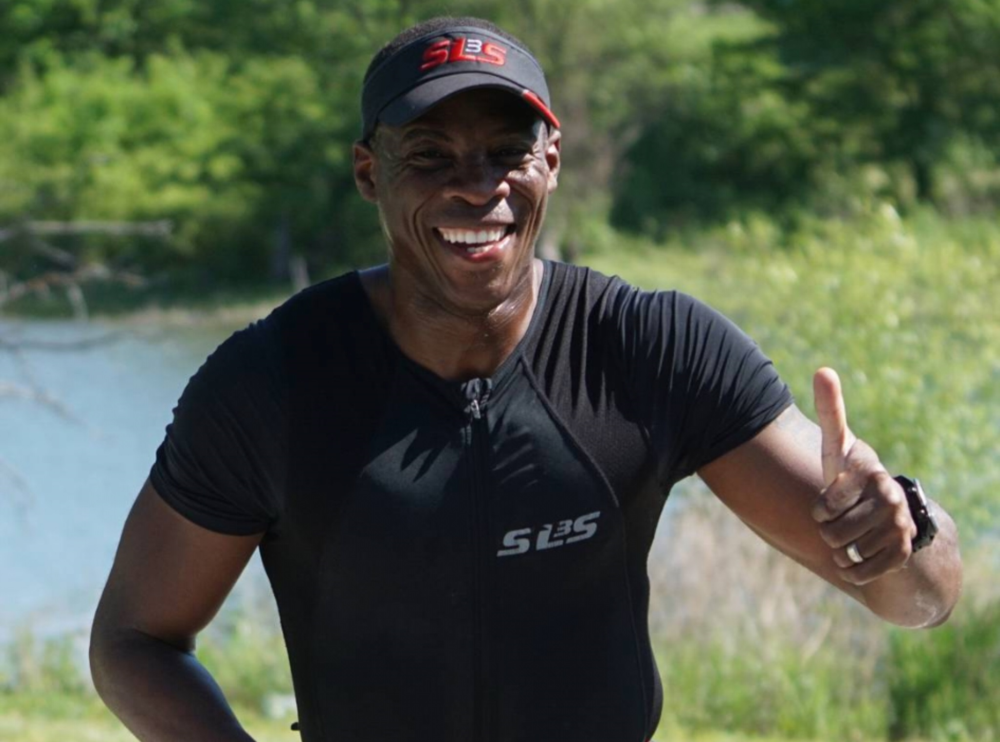
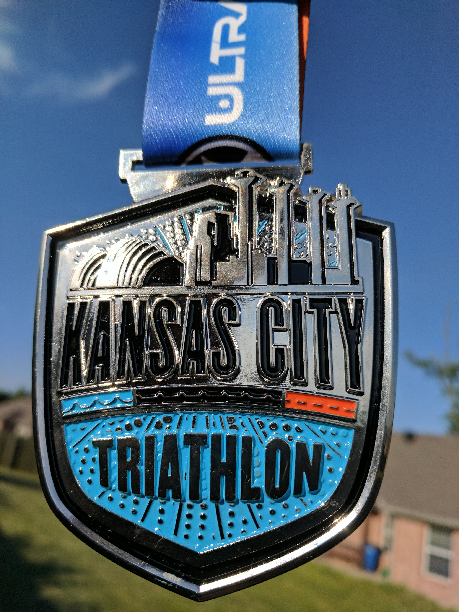
Fastest Triathlon
Kansas City Triathlon
MOST MEMORABLES RACES
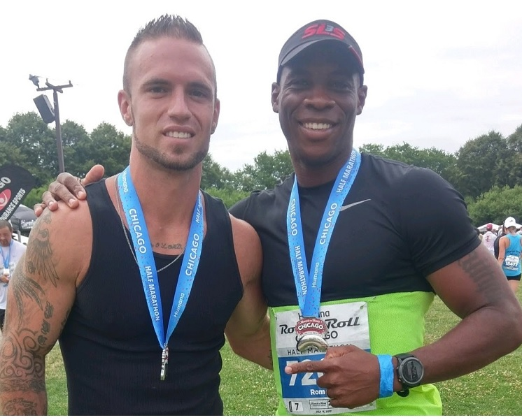
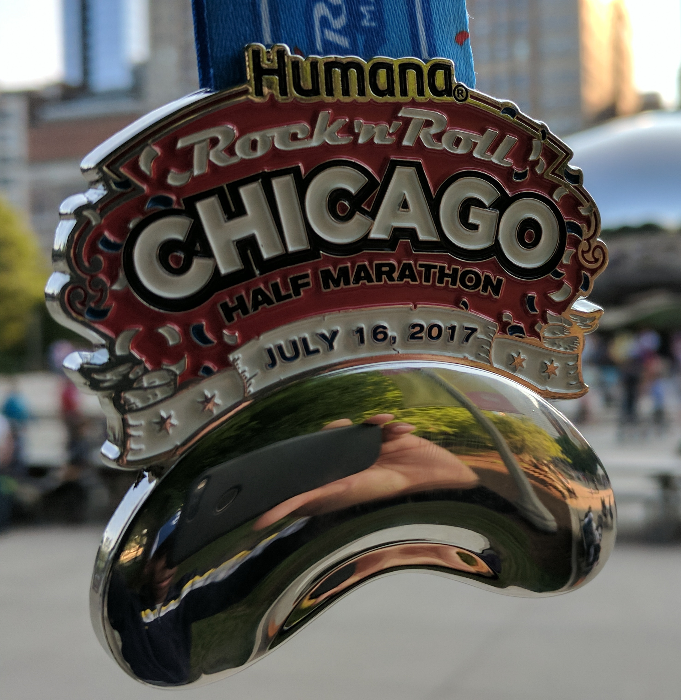
Big City Marathon
Chicago Rock'n roll

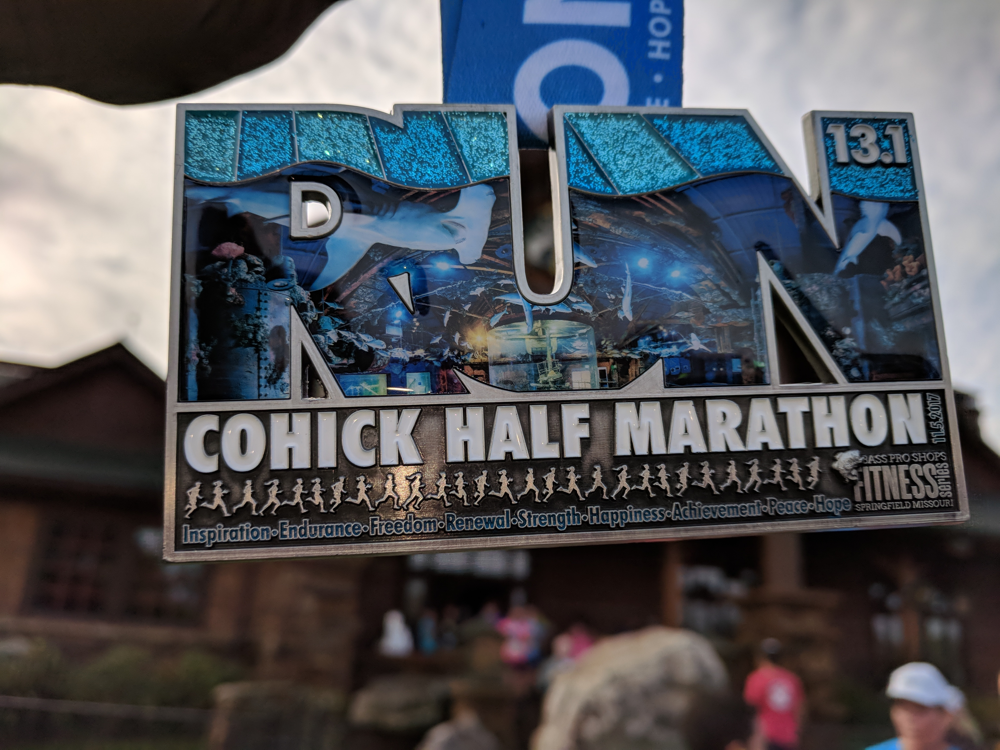
Flat Race
Cohick 1/2 Marathon

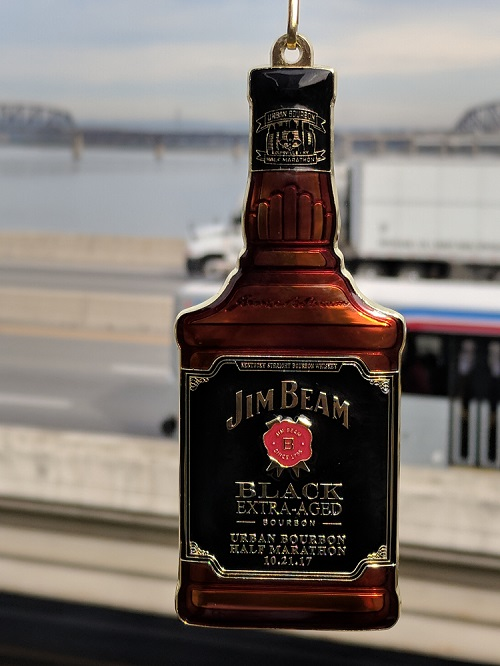
Drunkard Race
Bourbon 1/2 Marathon
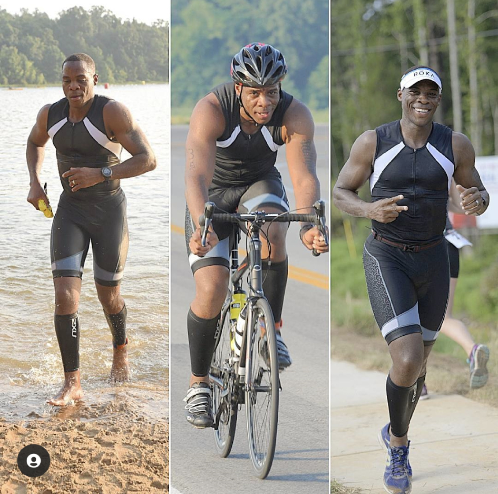
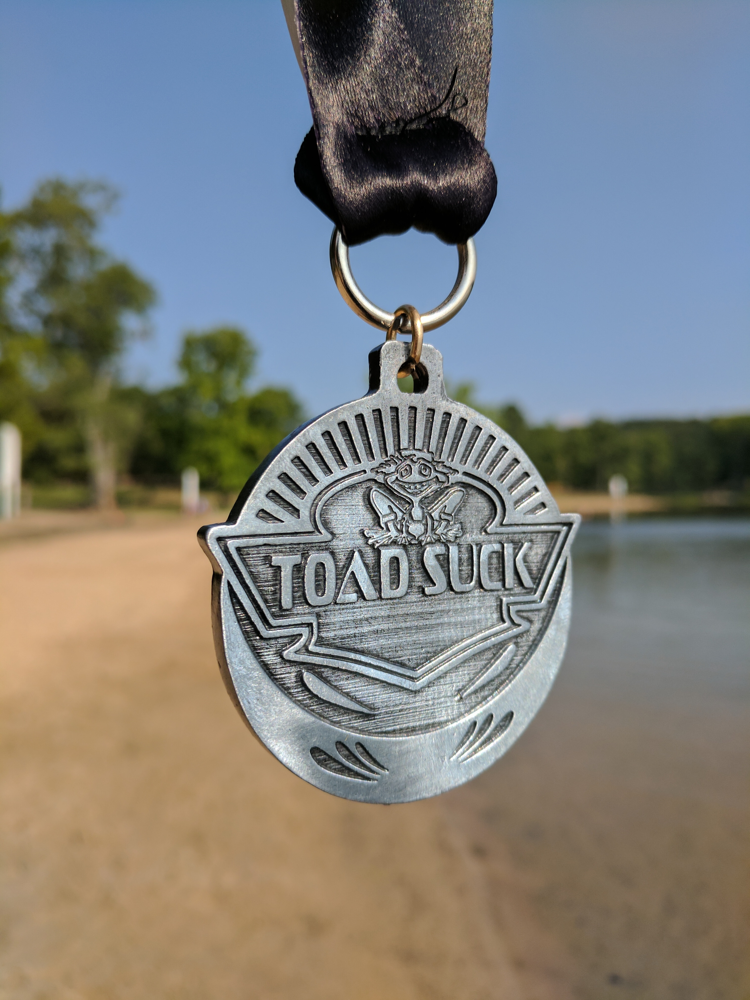
Beautiful Triathlon
Toad Suck Triathlon